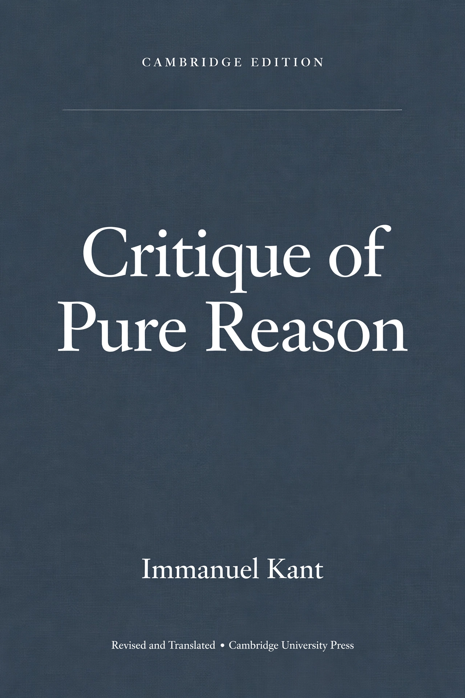

|
 Cover: Book cover, plain scholarly design in dark slate blue-grey with the title 'Critique of Pure Reason' and author 'Immanuel Kant' in clean white serif lettering, Cambridge Edition style |
DescriptionImmanuel Kant's 1781 landmark of modern philosophy (second edition 1787), which set out to explain how synthetic a priori knowledge is possible. Kant argues that space and time are forms of our intuition and that the understanding supplies categories — such as causality — that structure all experience, so we can know phenomena, things as they appear to us, but never noumena, things in themselves. Its accounts of the paralogisms and antinomies of pure reason reshaped metaphysics, epistemology and the philosophy that followed. Download this bookMirrors: [1] LibGen (GET) · [2] Mirror See also: Philosophy |